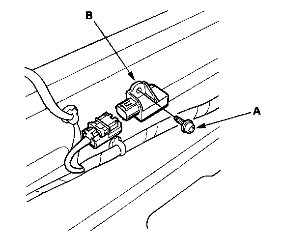
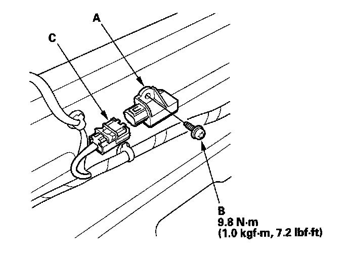

Safing Sensor: Service and Repair
Rear Safing Sensor ReplacementRemoval
1. Disconnect the negative cable from the battery, and wait at least 3 minutes before beginning work.
2. Disconnect both side curtain airbag 2P connectors.
3. Remove the rear seat.
4. Disconnect the floor wire harness 4P connector from the rear safing sensor.

5. Using a TORX T30 bit, remove the TORX bolt (A), then remove the rear safing sensor (B).
Installation

1. Install the new rear safing sensor (A) with a TORX bolt (B) then connect the floor wire harness 4P connector (C) to the rear safing sensor.
2. Reconnect the negative cable to the battery.
3. Reinstall all removed parts.
4. After installing the rear safing sensor, confirm proper system operation: Turn the ignition switch ON (II); the SRS indicator should come on for about 6 seconds and then go off.